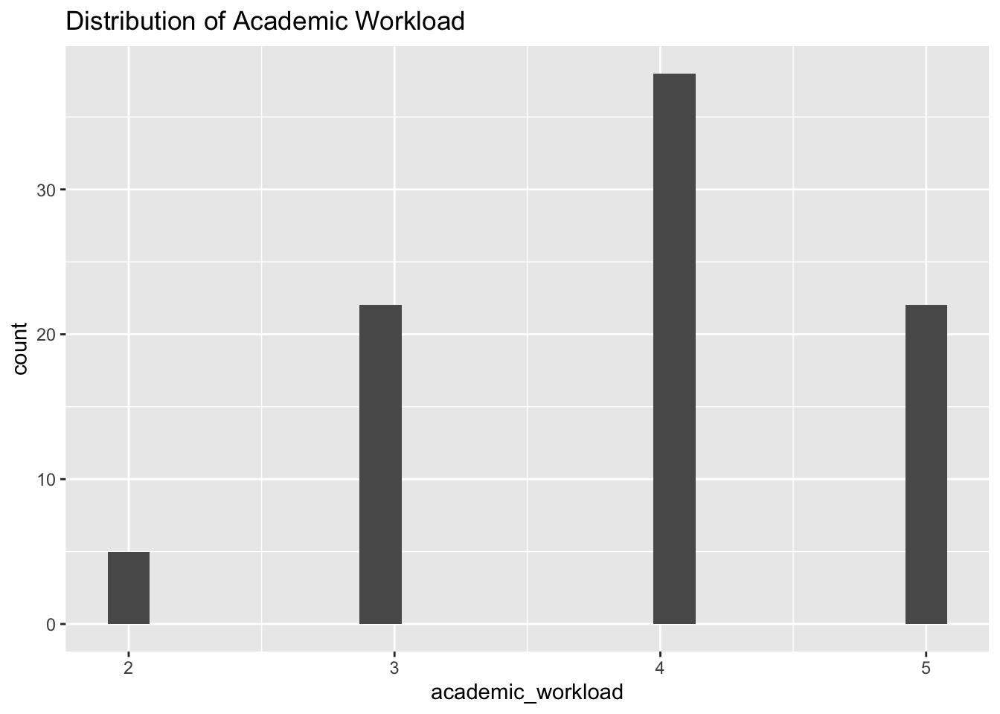
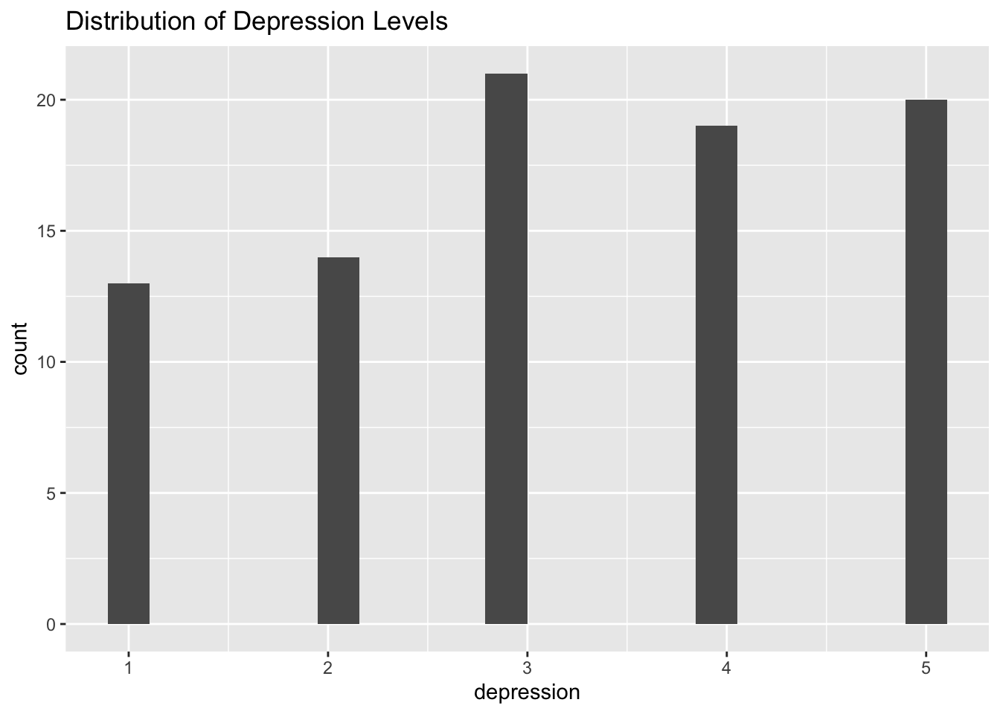
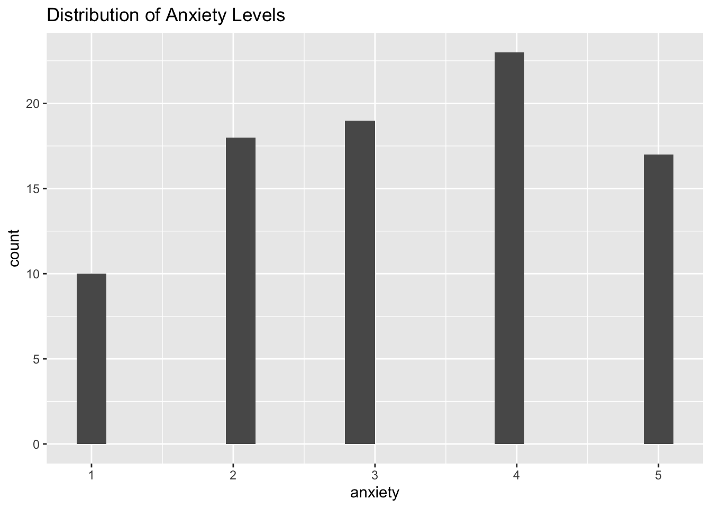
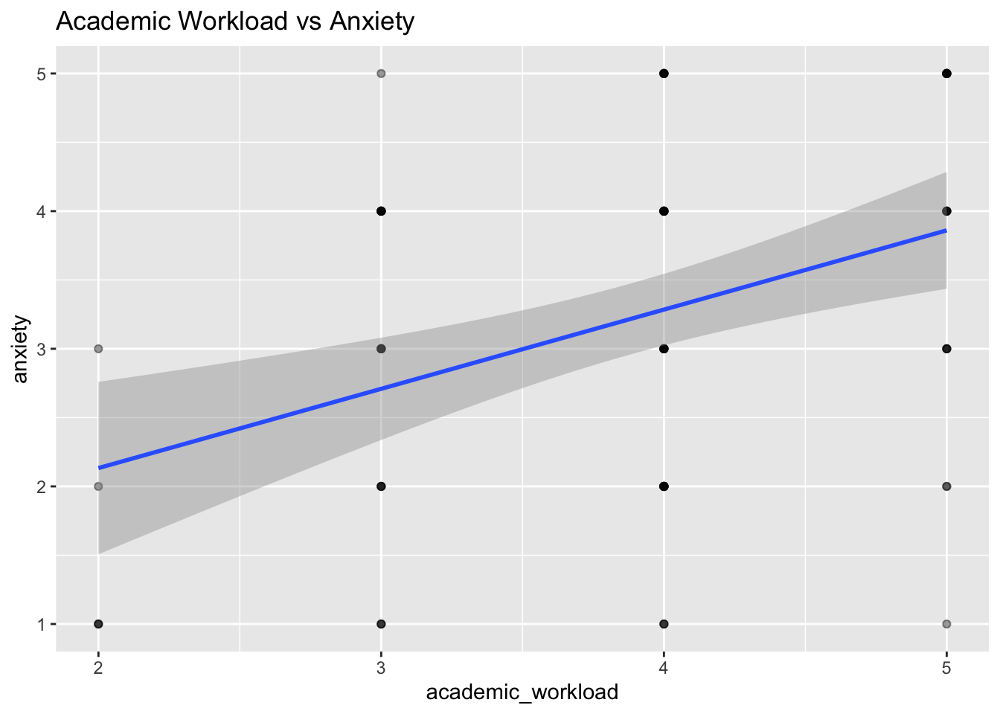
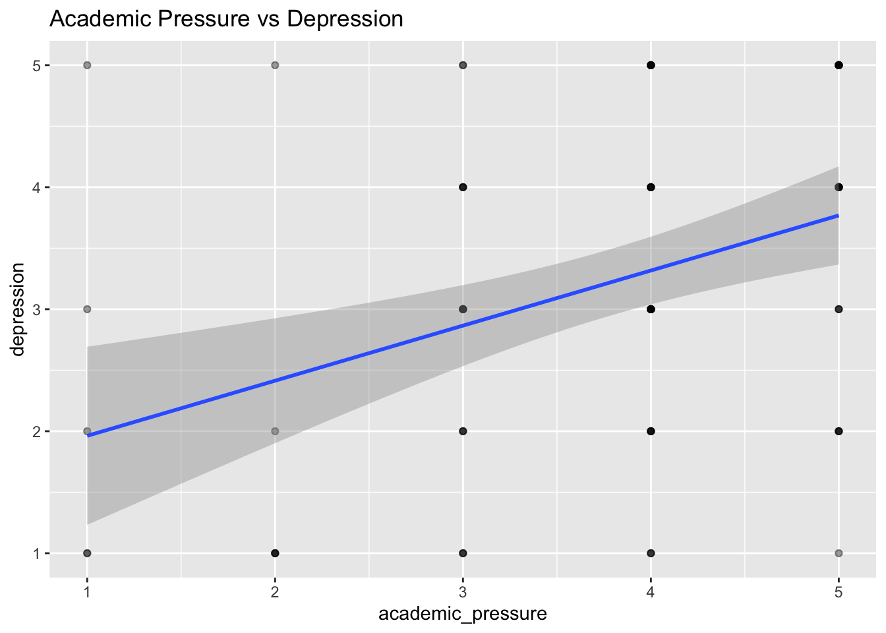
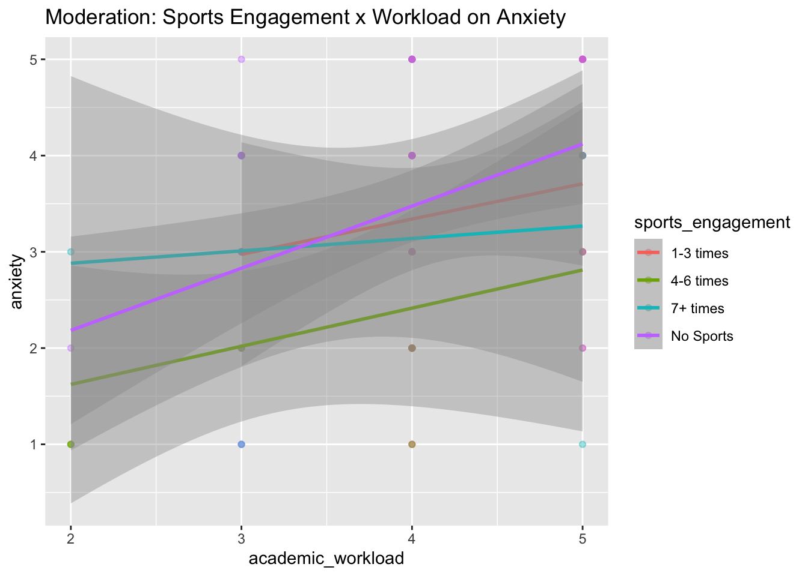
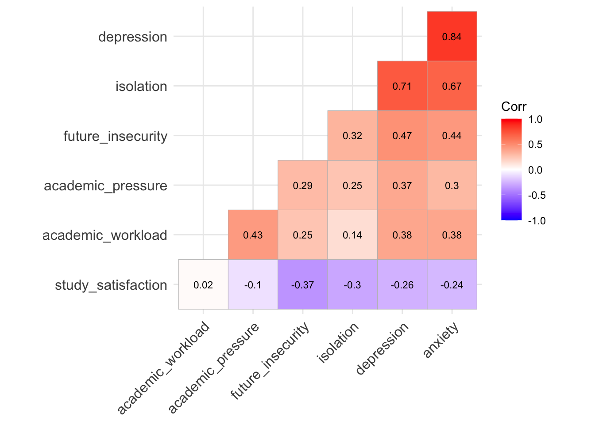
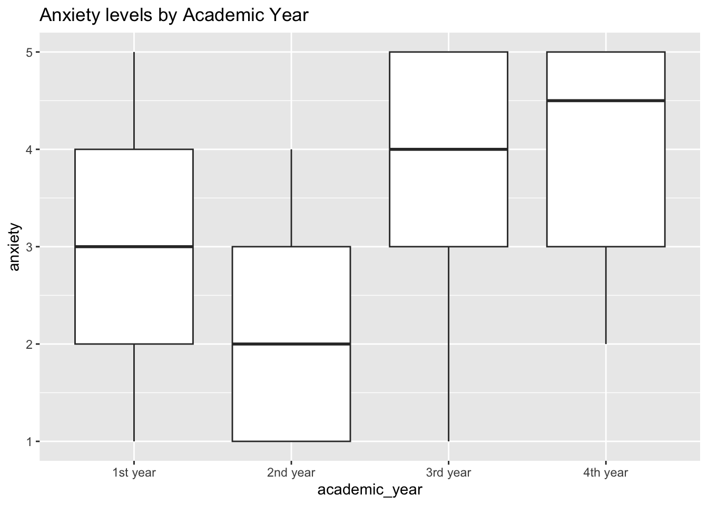

Kate M
Code
Rows: 87
Columns: 21
$ gender <chr> "Male", "Male", "Male", "Male", "Female", "Fe…
$ age <dbl> 20, 20, 20, 20, 20, 20, 26, 22, 20, 23, 20, 2…
$ university <chr> "PU", "UET", "FAST", "UET", "UET", "UET", "PU…
$ degree_level <chr> "Undergraduate", "Postgraduate", "Undergradua…
$ degree_major <chr> "Data Science", "Computer Science", "Computer…
$ academic_year <chr> "2nd year", "3rd year", "3rd year", "3rd year…
$ cgpa <chr> "3.0-3.5", "3.0-3.5", "2.5-3.0", "2.5-3.0", "…
$ residential_status <chr> "Off-Campus", "Off-Campus", "Off-Campus", "On…
$ campus_discrimination <chr> "No", "No", "No", "No", "Yes", "No", "Yes", "…
$ sports_engagement <chr> "No Sports", "1-3 times", "1-3 times", "No Sp…
$ average_sleep <chr> "4-6 hrs", "4-6 hrs", "2-4 hrs", "4-6 hrs", "…
$ study_satisfaction <dbl> 5, 5, 5, 3, 3, 4, 4, 3, 3, 3, 5, 4, 5, 3, 3, …
$ academic_workload <dbl> 4, 4, 5, 5, 5, 5, 4, 4, 4, 5, 4, 5, 3, 3, 3, …
$ academic_pressure <dbl> 5, 4, 5, 4, 5, 5, 4, 4, 3, 3, 4, 4, 5, 4, 3, …
$ financial_concerns <dbl> 4, 1, 3, 4, 2, 3, 5, 5, 4, 5, 1, 4, 5, 5, 3, …
$ social_relationships <dbl> 3, 3, 4, 1, 3, 3, 2, 4, 2, 1, 4, 4, 1, 3, 2, …
$ depression <dbl> 2, 3, 2, 5, 5, 5, 5, 3, 3, 5, 3, 2, 4, 5, 4, …
$ anxiety <dbl> 1, 3, 3, 5, 5, 5, 4, 2, 4, 5, 3, 3, 4, 4, 3, …
$ isolation <dbl> 1, 3, 3, 5, 4, 5, 4, 2, 3, 5, 1, 1, 4, 5, 5, …
$ future_insecurity <dbl> 2, 4, 1, 3, 4, 5, 5, 4, 5, 5, 3, 2, 2, 1, 3, …
$ stress_relief_activities <chr> "Religious Activities, Social Connections, On…| Name | data |
| Number of rows | 87 |
| Number of columns | 21 |
| _______________________ | |
| Column type frequency: | |
| character | 11 |
| numeric | 10 |
| ________________________ | |
| Group variables | None |
Variable type: character
| skim_variable | n_missing | complete_rate | min | max | empty | n_unique | whitespace |
|---|---|---|---|---|---|---|---|
| gender | 0 | 1 | 4 | 6 | 0 | 2 | 0 |
| university | 0 | 1 | 2 | 7 | 0 | 9 | 0 |
| degree_level | 0 | 1 | 12 | 13 | 0 | 2 | 0 |
| degree_major | 0 | 1 | 12 | 22 | 0 | 4 | 0 |
| academic_year | 0 | 1 | 8 | 8 | 0 | 4 | 0 |
| cgpa | 0 | 1 | 7 | 7 | 0 | 6 | 0 |
| residential_status | 0 | 1 | 9 | 10 | 0 | 2 | 0 |
| campus_discrimination | 0 | 1 | 2 | 3 | 0 | 2 | 0 |
| sports_engagement | 0 | 1 | 8 | 9 | 0 | 4 | 0 |
| average_sleep | 0 | 1 | 7 | 7 | 0 | 3 | 0 |
| stress_relief_activities | 0 | 1 | 5 | 109 | 0 | 38 | 0 |
Variable type: numeric
| skim_variable | n_missing | complete_rate | mean | sd | p0 | p25 | p50 | p75 | p100 | hist |
|---|---|---|---|---|---|---|---|---|---|---|
| age | 0 | 1 | 19.94 | 1.62 | 17 | 19.0 | 20 | 21.0 | 26 | ▂▇▃▁▁ |
| study_satisfaction | 0 | 1 | 3.93 | 1.04 | 1 | 3.0 | 4 | 5.0 | 5 | ▁▁▆▆▇ |
| academic_workload | 0 | 1 | 3.89 | 0.85 | 2 | 3.0 | 4 | 4.5 | 5 | ▁▅▁▇▅ |
| academic_pressure | 0 | 1 | 3.78 | 1.13 | 1 | 3.0 | 4 | 5.0 | 5 | ▁▂▅▇▆ |
| financial_concerns | 0 | 1 | 3.39 | 1.40 | 1 | 2.5 | 3 | 5.0 | 5 | ▃▃▇▅▇ |
| social_relationships | 0 | 1 | 2.78 | 1.18 | 1 | 2.0 | 3 | 4.0 | 5 | ▅▃▇▅▂ |
| depression | 0 | 1 | 3.22 | 1.37 | 1 | 2.0 | 3 | 4.0 | 5 | ▅▅▇▇▇ |
| anxiety | 0 | 1 | 3.22 | 1.30 | 1 | 2.0 | 3 | 4.0 | 5 | ▃▆▆▇▆ |
| isolation | 0 | 1 | 3.24 | 1.41 | 1 | 2.0 | 3 | 4.5 | 5 | ▅▅▇▆▇ |
| future_insecurity | 0 | 1 | 3.01 | 1.39 | 1 | 2.0 | 3 | 4.0 | 5 | ▆▆▇▆▆ |
Code
# A tibble: 21 × 2
variable missing_count
<chr> <int>
1 gender 0
2 age 0
3 university 0
4 degree_level 0
5 degree_major 0
6 academic_year 0
7 cgpa 0
8 residential_status 0
9 campus_discrimination 0
10 sports_engagement 0
# ℹ 11 more rowsCode
vars n mean sd median trimmed mad min max range skew
academic_workload 1 87 3.89 0.85 4 3.93 1.48 2 5 3 -0.33
academic_pressure 2 87 3.78 1.13 4 3.92 1.48 1 5 4 -0.83
depression 3 87 3.22 1.37 3 3.27 1.48 1 5 4 -0.20
anxiety 4 87 3.22 1.30 3 3.27 1.48 1 5 4 -0.18
isolation 5 87 3.24 1.41 3 3.30 1.48 1 5 4 -0.23
average_sleep* 6 87 2.31 0.58 2 2.34 0.00 1 3 2 -0.13
sports_engagement* 7 87 2.80 1.30 3 2.87 1.48 1 4 3 -0.39
study_satisfaction 8 87 3.93 1.04 4 4.04 1.48 1 5 4 -0.78
kurtosis se
academic_workload -0.62 0.09
academic_pressure 0.04 0.12
depression -1.18 0.15
anxiety -1.13 0.14
isolation -1.23 0.15
average_sleep* -0.67 0.06
sports_engagement* -1.62 0.14
study_satisfaction 0.13 0.11Code

Code

Code

initial relationships
Code

Code

Code

Code
library(ggcorrplot)
corr_matrix <- cor(data %>%
select(academic_workload, academic_pressure, study_satisfaction,
depression, anxiety, isolation, future_insecurity),
use = "pairwise.complete.obs", method = "pearson")
ggcorrplot(corr_matrix,
lab = TRUE, lab_size = 3,
hc.order = TRUE,
type = "lower") +
theme(
axis.text.x = element_text(angle = 45, hjust = 1),
axis.text.y = element_text(angle = 0)
)
Code
